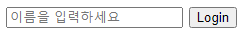
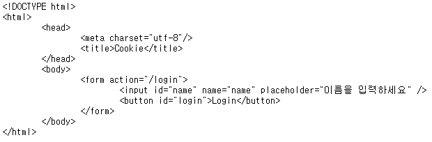

*개인적인 공부 내용을 기록하는 용도로 작성한 글 이기에 잘못된 내용을 포함하고 있을 수 있습니다.
*지속적으로 내용을 수정해 나갈 예정입니다.
_Ref
https://developer.mozilla.org/ko/docs/Web/HTTP/Basics_of_HTTP/MIME_types
_Content
#1 Content-Type
#2 MIME
#3 Content-Type 종류
#1 Content-Type
Content-Type이란 HTTP 통신에서 전송되는 데이터 타입을 나타내는 Header의 한 요소로 수신자는 명시된 Content-Type에 따라 수신측은 데이터를 어떻게 처리할 지를 결정한다.
만약 Content-Type을 따로 명시하지 않으면 수신측은 단순한 텍스트 데이터로 처리한다.
Content-Type은 HTTP MIME 표준을 따른다.
* cookie2.html
<!DOCTYPE html>
<html>
<head>
<meta charset="utf-8"/>
<title>Cookie</title>
</head>
<body>
<form action="/login">
<input id="name" name="name" placeholder="이름을 입력하세요" />
<button id="login">Login</button>
</form>
</body>
</html>
* NODE.JS에서 cookie2.html HTML 파일을 Content-Type을 이용해 HTML 파일임을 명시해 준 경우
const data = await fs.readFile('./cookie2.html');
res.writeHead(200, { 'Content-Type': 'text/html; charset=utf-8' });
res.end(data);
* NODE.JS에서 cookie2.html HTML 파일을 text 파일로 명시해 준 경우
const data = await fs.readFile('./cookie2.html');
res.writeHead(200, { 'Content-Type': 'text/plain; charset=utf-8' });
res.end(data);
이처럼 content-type을 어떻게 명시하느냐에 따라 파일의 출력 형태가 달라진다.
#2 MIME
MIME(Multipurpose Internet Mail Extensions)은 이름에서 유추할 수 있듯이 전자 우편을 위한 인터넷 표준 포맷으로 메일과 함께 동봉할 파일을 텍스트 문자로 치환하여 보내는 용도로 개발되었다.
그러나 현재는 웹을 통해 다양한 파일의 형태를 전달 하는 데 사용된다.
MIME으로 인코딩한 파일은 Content-type 정보를 파일의 앞부분에 담으며 문법은 다음과 같다.
문법 : type/subtype
ex> Content-Type : image/png - png 이미지
#3 Content-Type 종류
* 문자(Text)
1.Content-Type: text/plain - 텍스트 파일 기본 타입
2.Content-Type: text/html - HTML 타입
3.Content-Type: text/css - CSS 타입
4.Content-Type: text/javascript - JS 타입
* 이미지(Image)
1.Content-Type: image/png (PNG)
2.Content-Type: image/Jpeg (JPEG)
3.Content-Type:image/gif (GIF)
4.Content-Type: image/webp
* 오디오(audio)
1. audio/midi
2. audio/mpeg
3. audio/webm
4. audio/ogg
5. audio/wav
* 비디오(video)
1. video/webm
2. video/ogg
* application
1. application/octet-stream
2. application/pkcs12
3. application/vnd.mspowerpoint
4. application/xhtml+xml
5. application/xml
6. application/pdf